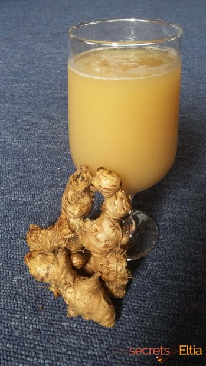

| |
|
 |
Je vous donne tous ses conseils et astuces pour réussir un excellent jus de Gingembre,
riche en saveurs et bon pour la santé !
VOTRE LISTE D’INGRÉDIENTS :
Voici ce qu’il vous faudra pour confectionner votre boisson :
- 1 litre d’eau
- 250 grammes de rhizomes de gingembre
- 125 grammes de sucre
- un citron jaune
LES ÉTAPES DE PRÉPARATION DE VOTRE JUS DE GINGEMBRE :
Voici la première astuce : nous vous conseillons de plonger les rhizomes quelques minutes dans de l’eau froide.
Cette étape a pour objectif de vous aider à retirer ensuite la peau de vos morceaux de gingembre.
N’hésitez pas à utiliser votre économe.
Il y a maintenant un choix à faire. Première option, vous souhaitez confectionner votre jus de gingembre de manière traditionnelle,
et n’avez pas peur d’user d’un peu d’huile de coude. Sortez alors votre mortier et votre pilon, et commencez à piler les rhizomes,
jusqu’à l’obtention d’une pâte. La deuxième option correspond au deuxième conseil malin…
Cette éventualité est plus simple et plus rapide, si vous êtes équipé bien entendu :
après avoir coupé le gingembre en morceaux, passez-le au mixeur, accompagné d’un demi-verre d’eau tiède.
Ensuite, portez le litre d’eau à ébullition puis versez dans un grand récipient.
Ajoutez-y la pâte de gingembre et le citron coupé en quartiers (ne retirez pas la peau)
puis laissez infuser au minimum 30 minutes.
Sortez un saladier de même contenance pour passer le mélange au chinois.
L’objectif de la manœuvre est de filtrer les résidus qui ne seraient pas agréables à la dégustation.
C’est le moment d’incorporer le sucre : n’hésitez pas à goûter la boisson pour adapter la dose à votre convenance.
Placez le jus de gingembre dans une bouteille, et réservez au frais. N’oubliez pas de bien secouer avant de servir la boisson.
Vous savez maintenant tout sur la recette du Gnamankoudji !
LES VARIANTES DU JUS DE GINGEMBRE
La recette du Gnamankoudji que nous venons de vous énoncer peut être agrémentée d’autres ingrédients.
Certains ajoutent du citron vert pour apporter une touche d’acidité. D’autres préfèrent parfumer leur recette de jus de gingembre
à l’aide de quelques feuilles de menthe, de sucre vanillé, de jus d’ananas ou de Bissap.
Sachez que ces ajouts permettent également de contrebalancer la saveur marquée du breuvage.
À cet égard, vous pouvez aussi adapter la quantité de gingembre indiquée. Si vous craignez que la boisson soit trop forte,
n’hésitez pas à en mettre en moins. Vous pouvez aussi choisir de diluer les 250g de pâte de gingembre dans 1,5 ou 2 litres d’eau.
Il est de coutume de déguster le jus de gingembre bien frais. Vous pouvez tout à fait le réserver au congélateur,
pour un effet glacé ou granité. L’histoire et la recette du Gnamankoudji n’ont maintenant plus de secrets pour vous !